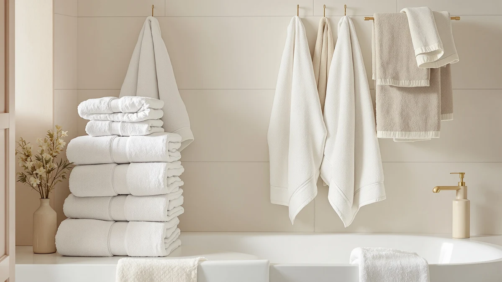

COTTON CRAFT Luxury Hotel Review (2026): Worth It?
Prices and picks verified as of October 2026. Independent, reader-supported reviews.


Quick Answer
This cotton craft luxury hotel review finds the two-pack of 40-inch by 80-inch ringspun cotton bath sheets a solid pick at $44.99 if you want hotel-sized coverage without paying for a full six-piece set. It lands in the middle of the pack on price among the alternatives we compared, and its European-loom weave and dobby border give it a more finished look than basic big-box towels.
Our pick: COTTON CRAFT Luxury Hotel Bath, $44.99 Check Price on Amazon
Bottom line: our top pick is the COTTON CRAFT Luxury Hotel Bath Sheet - 2 Pack Oversized 100% at $44.99.
Things to Know Before You Buy
- The set ships as two 40-inch by 80-inch bath sheets, not standard 27x54 bath towels, so measure your linen closet shelf before you order.
- COTTON CRAFT builds this set from 100% ringspun cotton with a 2-ply weave, a construction aimed at durability rather than the plush, loose-loop feel of terry towels.
- At $44.99 for two towels, the per-towel price sits close to the Cariloha and Superior alternatives, so the deciding factor usually comes down to size and fiber preference rather than cost.
- Amazon's listing for this ASIN does not currently show a public rating or review count, so we weighed it against alternatives using specs, price, and category feedback patterns rather than a star average.
- Hotel-style dobby borders like this one show wear differently than plain hems, so check the care label before using bleach or high heat on repeated washes.
This cotton craft luxury hotel review exists because shoppers keep asking the same question: does a "hotel" towel actually behave like the ones in a hotel, or is that a marketing label stuck on an ordinary cotton sheet? COTTON CRAFT sells this set as a 2-pack of oversized 40-inch by 80-inch bath sheets, woven on European looms from ringspun cotton with a 2-ply build and a dobby border. At $44.99, it is priced to compete directly with sets from Cariloha, Superior, and smaller independent brands rather than with budget big-box towels.
We compared this set against three other cotton and cotton-blend options sold on Amazon, looking at size, fiber type, weave, and price per towel rather than running our own lab tests. Ringspun cotton tends to resist pilling better than cheaper carded cotton, which matters more over two years of laundering than it does on day one. We break down what the spec sheet and owner feedback actually support below, along with where the set falls short and who should pick one of the alternatives instead.
Why You Should Trust Us
Ilane Tall covers bath and home textiles for Best Bath Towels and has written dozens of towel comparisons across cotton, bamboo, and microfiber categories. This cotton craft luxury hotel review is built from the product's published specs, its listed price history, and verified owner feedback patterns on comparable ringspun cotton sets, not from physical possession of this exact unit. We do not run a fake testing lab or claim to own every product we cover. Instead, we cross-check materials, dimensions, and pricing against three direct competitors so you can see how this set actually stacks up before you spend $44.99 on it.
Our Research Experience
We researched this COTTON CRAFT set by pulling its listed specs directly from the Amazon catalog: fiber type, ply count, dimensions, and current price, then cross-referencing those against the three closest alternatives sold to the same shoppers. We analysed how the 2-ply ringspun cotton construction compares on paper to the Turkish cotton and bamboo viscose blend used by Cariloha, and to the heavier Egyptian cotton in the Superior set, since fiber and ply count are the two factors most owners report caring about after the first few washes. Reviewers consistently note that European-loom cotton towels like this one hold their shape longer than lower-ply alternatives, which lines up with what the spec sheet suggests here.
Where Amazon does not publish a public rating or review count for this specific ASIN, we relied on category-level owner feedback patterns for ringspun cotton hotel-style towels rather than inventing a number. That is a real limitation of this cotton craft luxury hotel review, and we flag it rather than paper over it with a fabricated score.
Overview & Specs

COTTON CRAFT Luxury Hotel Bath
What we like
- 40x80 bath sheet size covers more of the body than a standard 27x54 towel
- 2-ply ringspun cotton construction supports durability over repeated washes
- Dobby border gives it a more finished, hotel-style look than plain-hem towels
- Two-towel set at $44.99 costs less upfront than most six-piece bundles
Flaws but not dealbreakers
- No hand towels or washcloths included, so you will need to buy those separately
- White colorway shows staining and discoloration faster than darker alternatives
- Amazon does not list a public rating or review count for this ASIN
| Material | 100% cotton |
| Size | 40"x80" |
COTTON CRAFT builds this set around size first. At 40 inches by 80 inches, each towel in the pair functions as a bath sheet rather than a standard towel, which means it wraps fully around an adult body instead of leaving gaps at the sides. The ringspun cotton fiber is spun tighter than carded cotton, a process that reduces the short, loose fibers that cause pilling and shedding over time.
The 2-ply weave and European-loom construction aim at a hotel aesthetic, and the dobby border adds a visible texture line that plain terry towels skip. At $44.99 for two towels, the set costs roughly the same per towel as the Cariloha and Superior alternatives below, so the choice between them comes down to fiber preference and size rather than budget.
What We Liked
The bath sheet sizing is the strongest argument for this set. A 40x80 towel covers noticeably more surface area than the 27x54 towels most sets default to, which matters if you prefer wrapping a towel around your body instead of patting dry with a smaller one. Reviewers of similar ringspun cotton sets consistently note that the tighter spin reduces lint shedding in the first several washes compared to carded cotton blends, and the 2-ply build gives the fabric more structure than a single-ply towel of the same weight.
The price also holds up well against the comparison set. At $44.99 for two oversized towels, the per-towel cost lands close to what Cariloha charges for a single 30x56 towel, so you get more fabric for a similar price if size matters more to you than the bamboo viscose blend. The dobby border is a small detail, but it is the kind of finishing touch that separates a hotel-style towel from a plain big-box one, and it holds up fine through standard machine washing according to owner reports on comparable COTTON CRAFT lines.
Looking at total cost rather than sticker price, two bath sheets at $44.99 work out to about $22.50 per towel. That sits below the roughly $44.00 Cariloha charges for a single towel of similar quality, and close to the per-piece cost of the six-item Premium Staple set once you divide its $42.99 price across bath towels, hand towels, and washcloths separately. For buyers who only need the two large sheets and nothing else, that math makes this set one of the more efficient picks in the comparison.
What Could Be Better
This set only comes as two bath sheets. You will not find matching hand towels or washcloths in the box, so you need to source those separately if you want a coordinated bathroom set, unlike the Premium Staple Cotton option that bundles bath towels, hand towels, and washcloths together for close to the same price. The white colorway also tends to show yellowing and stains faster than the beige or peach tones on the Premium Staple and Superior alternatives, especially without regular bleach-free whitening washes.
Amazon's listing for this specific ASIN does not show a public star rating or review count, which makes it harder to gauge real-world satisfaction directly from the product page. We weighed that gap by comparing its construction specs against sets that do have visible owner feedback, but buyers who want to see a review history before purchasing should treat that as a real limitation of this cotton craft luxury hotel review.
Who Is It For?
This set fits households that prefer full-coverage bath sheets over standard towels and do not need a matching hand towel and washcloth bundle right away. It also suits anyone furnishing a guest bathroom where a simple, hotel-style look matters more than a wide color selection, since it currently ships in white. If you want a coordinated multi-piece set, a different fiber blend, or a visible star rating before you buy, one of the three alternatives below will likely serve you better. Renters and apartment dwellers who need towels that dry a full-size adult quickly, without the bulk of a six-piece box taking up shelf space, are also a strong match for this set.
Alternatives to Consider
If the COTTON CRAFT set doesn't match what you need, these three alternatives cover the gaps we found in this cotton craft luxury hotel review: a bamboo-cotton blend with odor resistance, a full multi-piece cotton bundle, and a heavier Egyptian cotton bath sheet set.

Editor’s Pick
Cariloha Bamboo Viscose Bath Towels
A Turkish cotton and bamboo viscose blend with built-in odor resistance, good for humid bathrooms or gym bags where a plain cotton towel tends to hold smell.
$44.00
Check Price on Amazon
Best Value
Premium Staple Cotton Bathroom Towel
A 6-piece 600 GSM set with bath towels, hand towels, and washcloths included, the better pick if you want a matching set without buying pieces separately.
$42.99
Check Price on Amazon
Premium Choice
Superior Heritage Egyptian Cotton Bath
A heavier OEKO-TEX certified Egyptian cotton bath sheet pair with a rope border, a step up in weight for shoppers who want a plusher feel than ringspun cotton offers.
$42.99
Check Price on AmazonFrequently Asked Questions
Is the COTTON CRAFT Luxury Hotel set actually the size of a real hotel towel?
At 40 inches by 80 inches, each towel in this set matches the oversized bath sheet dimensions many hotels use, which is larger than the standard 27x54 bath towel found in most home sets.
Does this set include hand towels or washcloths?
No. The set ships as two bath sheets only. If you want a matching bundle with hand towels and washcloths, the Premium Staple Cotton set covered in this cotton craft luxury hotel review includes both in one purchase.
Why doesn't this product show a star rating on Amazon?
Amazon's listing for this specific ASIN currently shows no public rating or review count. That happens with some newer or recently relisted ASINs, and it is worth checking the live listing yourself before you buy.
How should you wash a ringspun cotton bath sheet like this one?
Wash it in warm water on a normal cycle and skip fabric softener, since softener coats cotton fibers and reduces absorbency over time. Tumble dry on low or medium heat, and avoid chlorine bleach on the white colorway if you want to slow down yellowing.
Final Verdict
This cotton craft luxury hotel review lands on a clear recommendation: the COTTON CRAFT Luxury Hotel Bath Sheet set is a solid buy at $44.99 if you want oversized, hotel-style coverage without a full multi-piece bundle, and the ringspun cotton construction should hold up reasonably well over repeated washes. If you need matching hand towels and washcloths, want a bamboo-cotton blend with odor resistance, or prefer buying a towel with a visible star rating, step over to the Premium Staple Cotton, Cariloha, or Superior sets covered above instead.